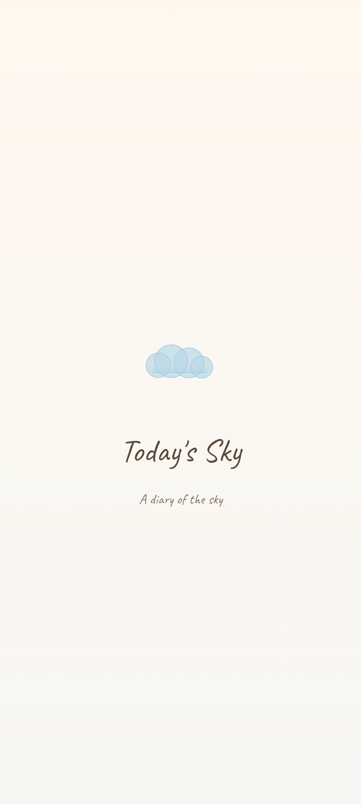
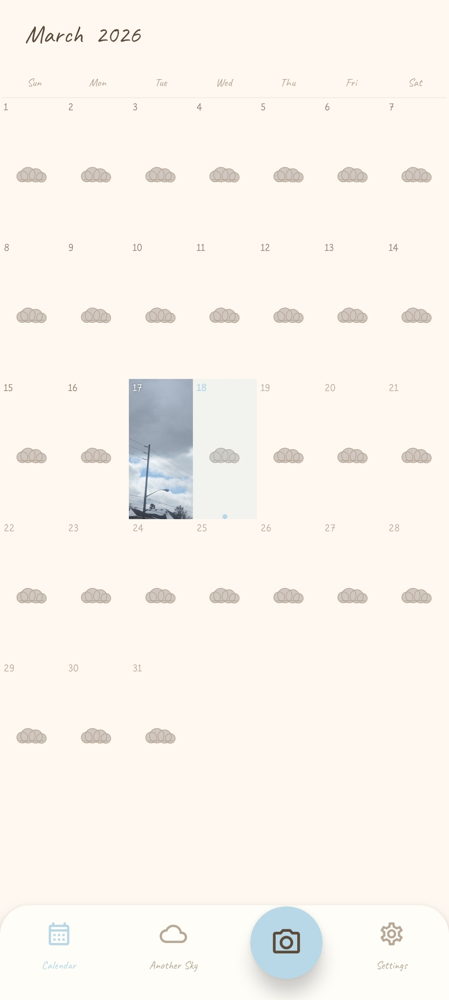
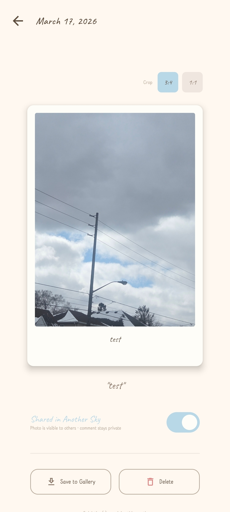
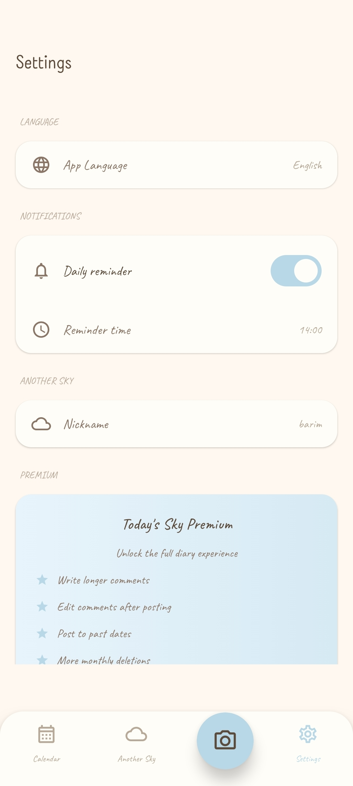

Computer Programming and Analysis Student
Welcome to my career portfolio. I am an aspiring web and mobile application developer from South Korea, currently studying at George Brown College in Toronto.
My name is Soojeong Lim. I am from South Korea and I am currently studying Computer Programming and Analysis at George Brown College in Toronto, Canada. I am passionate about building web and mobile applications that people can actually use. I enjoy learning new technologies and working on both frontend and backend development. My dream is to build and deploy my own app someday and grow it into something meaningful.
Email: [your-email@email.com] | Phone: [your-phone] | Location: Toronto, ON
George Brown College — Advanced Diploma, Computer Programming and Analysis
January 2024 - April 2026 (Expected)
I do not have professional work experience yet. However, I have built several projects during my studies that show my technical skills. Please see the Academic Work Experience section below for details.
[Date]
[Hiring Manager Name]
[Company Name]
[Company Address]
Dear [Hiring Manager Name],
I am writing to express my interest in the [Job Title] position at [Company Name]. As a Computer Programming and Analysis student at George Brown College, I have developed strong skills in web and mobile application development, including backend and frontend work.
During my studies, I built several applications using different technologies. For example, I developed a shift management backend using Java Spring Boot and PostgreSQL as my capstone project. I also built an Android weather app using Kotlin and Jetpack Compose as a personal project. These experiences taught me how to write clean code, work with a team, and meet deadlines. I am confident that my skills and enthusiasm make me a good fit for this role.
I would love the opportunity to discuss how I can contribute to your team. Thank you for your time and consideration.
Sincerely,
Soojeong Lim
"We are the facilitators of our own creative evolution" — Bill Hicks
I believe that the best way to learn is by building things. My motivation comes from the idea of creating an app that real people can use in their daily life. I came to Canada from South Korea to study programming, and since then, every project I work on pushes me to learn something new. I see myself as a developer who is always growing and never stops learning.
When I started this program in 2024, I had basic knowledge of coding. Now I can build full-stack web applications, Android apps, iOS apps, and backend APIs. My biggest goal is to deploy my own app to the public and earn money from it. I want to turn my ideas into real products that people enjoy using. This career goal keeps me motivated every single day.
George Brown College | January 2024 - April 2026 (Expected)
Technologies: Node.js, Express.js, Socket.io, MongoDB, HTML/CSS, Bootstrap
A real-time chat application that supports both group chat rooms and private one-on-one messaging. Users can sign up, log in, join different chat rooms, and send private messages to other users. Messages are saved in MongoDB so chat history is not lost. I learned how to use WebSockets for real-time communication and how to structure a Node.js backend with multiple features.
Technologies: Kotlin, Jetpack Compose, Google Maps API, Material 3
An Android application for searching and viewing restaurant information. Users can search by name, filter by food tags, and see restaurant locations on Google Maps. The app shows ratings, reviews, and details about each restaurant. This was a group project where I learned how to work with Google Maps API and build modern Android UI with Jetpack Compose.
Technologies: Kotlin, Jetpack Compose, Room Database, WorkManager
An Android app I built on my own for tracking and sharing sky and weather observations. Users can create posts about the sky, store them in a local database, and receive daily notifications. The app includes a content reporting system, daily reminder notifications, multi-language support, social sharing feature ("Another Sky"), and a premium subscription model. This project taught me how to use Room Database for local storage and WorkManager for background tasks.

Splash Screen

Calendar View

Post Detail

Settings
Technologies: Swift, SwiftUI
An iOS application for tracking daily habits with progress statistics and visualizations. It has a "Today" view for checking off habits, a statistics page with progress rings, and settings for customization. Data is saved locally using UserDefaults. This is my first iOS project and I am still actively working on it. I am learning Swift and SwiftUI through this project.
Technologies: Java, Spring Boot, PostgreSQL, JWT, Spring Security
A REST API backend for managing work shifts, shift swaps, and open shift offers. It includes user authentication with JWT tokens, admin functionality, and a full shift swap request system. This is my capstone project. See the Capstone Project section below for more details.
Superstore Management App is a backend system for managing work shifts in workplaces like restaurants, retail stores, or warehouses. It allows employees to view their shifts, request shift swaps with coworkers, and pick up open shifts. Managers can create and assign shifts, approve swap requests, and manage employee accounts. The system solves the common problem of messy shift scheduling by providing a clean API that any frontend or mobile app can connect to.
The vision of Superstore Management App is to make shift management simple and digital. Many small businesses still use paper schedules or group chats to manage shifts, which causes confusion and mistakes. Superstore Management App aims to provide a reliable backend that handles authentication, shift data, and swap logic so that developers can build a user-friendly app on top of it. The end users who will benefit are both employees (who want flexibility) and managers (who need control over schedules).
The project was planned in phases. Phase 1 was setting up the Spring Boot project structure, database connection with PostgreSQL, and basic user entity. Phase 2 was building the authentication system with JWT and Spring Security. Phase 3 was creating the shift management endpoints (create, read, update shifts). Phase 4 was adding the shift swap and open shift features. Phase 5 was testing and fixing bugs. The project is being developed during the Winter 2026 semester.
I analyzed the requirements by thinking about how shift scheduling works in real workplaces. I identified two main user roles: admin (manager) and employee. I designed the database with tables for users, shifts, swap requests, and open offers. For the API design, I followed RESTful conventions with clear endpoint naming. I chose Spring Boot because it is a popular Java framework for building enterprise-level APIs, and PostgreSQL for its reliability and support for complex queries.
Since Superstore Management App is a backend-only project, there are no UI wireframes. However, the API is designed to support any frontend client. The API endpoints are organized by resource (users, shifts, swaps, offers) and follow standard REST patterns (GET, POST, PUT, DELETE).
The project is currently in active development. The core features including user authentication, shift management, and swap requests have been implemented. The open shift offer feature and admin management endpoints are completed. The project is on track for completion before the end of the Winter 2026 semester.
Superstore Management App is built with Java 17 and Spring Boot 4.0.2. The backend uses Spring Security with JWT tokens for authentication. The database is PostgreSQL, connected through Spring Data JPA. The project follows a layered architecture with controllers (handle HTTP requests), services (business logic), and repositories (database access). Key features include user management, shift CRUD operations, swap request handling, and open shift offers. The API can be tested using tools like Postman.
[Describe professional work you have done. This could be freelance, internship, or part-time work.]
[Describe another piece of professional work.]
[You can add scanned copies or mention who wrote your recommendation letters.]